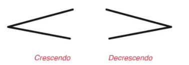

Tots escoltem i diferenciem els sons, però... tenim clares les qualitats d'aquests?
A l'ésser humà li agrada classificar, per això els sons no anaven a ser menys.
Els sons són vibracions que crea un cos. El millor exemple és una corda estirada com a la guitarra: en fregar-la o colpejar-la aconseguim que vibri i això és el que produeix el so.
Ara bé, no sempre vibra igual ni amb la mateixa força, produint cada vegada sons diferents.
Diem altura a la diferència de sons segons siguin més greus o aguts.
Els músics solem veure els sons en una línia ascendent en la qual ordenem els sons de més greus (a baix) a més aguts (a dalt).
Les partitures estan organitzades d'aquesta mateixa forma. Les notes que estan en la zona baixa del pentagrama són més greus que les que estan en zones més altes.
Segons la seva altura podem classificar el so com:
La forma en què indiquem l’altura és amb les notes musicals.
Cada interval sonarà dues vegades.
Amb la intensitat ens referim al volum fort o suau amb què percebem els sons.
Un so fort pot ser el que produeix un avió, mentre que un so suau pot ser el tic-tac d'un rellotge.
Per mesurar la intensitat utilitzem el sonòmetre, un aparell que mesura la pressió acústica en decibels.
Segons la seva intensitat podem classificar el so com:
En la música hi ha diferents indicacions per definir la intensitat dels sons:
FF, F, MF, MP, P, PP
També existeixen termes per canviar la intensitat del so:

Una altra qualitat és la durada, on mesurem el temps que dura el so.
En el nostre dia a dia mesurem el pas del temps amb el rellotge, però en la música utilitzem el metrònom, un aparell que mesura espais de temps o polsos continus.
Per representar la durada en la música fem servir les figures musicals com la negra, la blanca o la corxera.
Segons la durada podem dir que el so és:
En la música hi ha moltes diferències de durada, per això existeixen tantes figures musicals i combinacions possibles.
El timbre és el so específic de cada instrument o veu.
Cada instrument té una sonoritat pròpia: no sona igual un piano que una guitarra.
Aquesta diferència és la que anomenem timbre, i és una propietat única de cada instrument.
De la mateixa manera que cada persona té una veu diferent, això també s'anomena timbre.
El timbre pot variar segons el tamany, la forma o el material amb què està fet l’instrument.